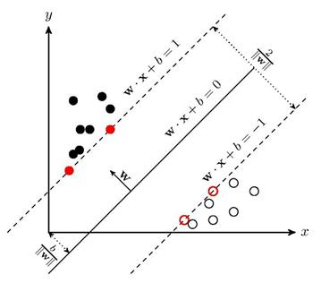
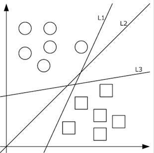
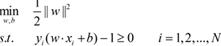
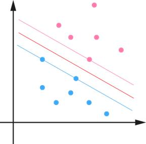
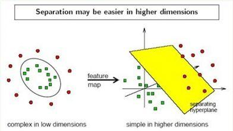

支持向量机算法作为机器学习领域的经典算法，从被提出开始提出后快速发展，在很多场景和领域都取得了非常好的效果，同时兼有数度快，支持数据量级大（相对经典机器学习算法）等特点使其在工程实践中的得到了广泛的应用。
间隔最大化
要理解svm我们需要先理解什么是间隔最大化，首先从简单的线性二分类开始开始说起。要想对不用的样本空间分开来，如下如所示，需要找出一条线将不同分类的样本隔离开。

线性分类器就是通过这条线，我们就能将不同类别的样本分离开来，当有新的样本来时，判断在这条线的那个部分就可以得出新的样本的类别。
如下图所示，能将样本分类的分离的线具有很多，如下图的L1，L2，L3。但是如何选择一条最优的线来分割呢？
最大间隔的原理就是通过选择一个离两个样本都尽量远的中间线。也就是下图中的L2。这样的好处就是，因为离两边的样本都比较远。所以误判的情况相对较小。预测的精度更高。

那如何完成这个间隔最大线的选择呢。这部分需要通过利用严谨的数学公式推倒。过程感兴趣的同学可以查看相关资料。这里就直接给出结论。

通过利用最优化的处理方法，可以得出获取这条最优间隔线的方法。
支持向量
说了这么久的间隔函数，最大间隔的问题，那什么是支持向量呢。如下图所示，由于间隔最大化需要在两个不同的样本类别中找出最大间隔的分割线，因此，举例分割线两边等距离的样本的点至关重要。这些点就是支持向量。

由于选对支持向量就可以得出最大间隔线，所以在算法迭代过程中，只需要在内存中保存和更新些点即可，会大大节省算法占用的内存空间，这对在实际工程中是十分重要的。
核函数（kernel function）
截止目前我们描述的支持向量机的算法都是线性可分的。但在实际工程中，很多场景和环境中的使用情况是线性不可分的。针对这些问题。需要找到一种分离样本的方法。因此这部分内容就是核（kernel）函数需要考虑的问题。

总结一下，支持向量机方法，通常分为如下几个步骤。
1.首先，对样本空间利用核函数的方法转换到能线性可分的空间。
2.然后利用最大化间隔的方法获取间隔最大的分割线。进而得出支持向量。
3.最后利用分割线和支持向量，可以对新的样本进行分类预测。
综上所述，相信读者在阅读完本文后，会对支持向量机算法有一个全面的了解和认知。使读者对svm算法的基本原理和涉及到的相关知识提供一种快速了解掌握的方法。但在面对真实的机器学习项目时，如何有效的利用svm向量机还需进一步对svm算法中超参数和核函数的选择有更清晰和熟练的掌握。
慢慢算法之路，与君共勉！